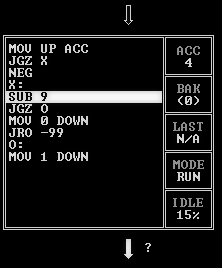

Async JS.
Introduction
First, some basics. They may seem trivial, but it is important to keep them in mind before moving further.
CPU core executes instructions one by one, sometimes jumping to other locations.

CPU cores are assigned to execute threads. This process is orchestrated by OS.
As a consequence, almost any program that has UI, would at some point have a loop of taking user input and processing it.
while !OS.ExitRequired
input = OS.GetNextUserInput()
this.ProcessInput(input)